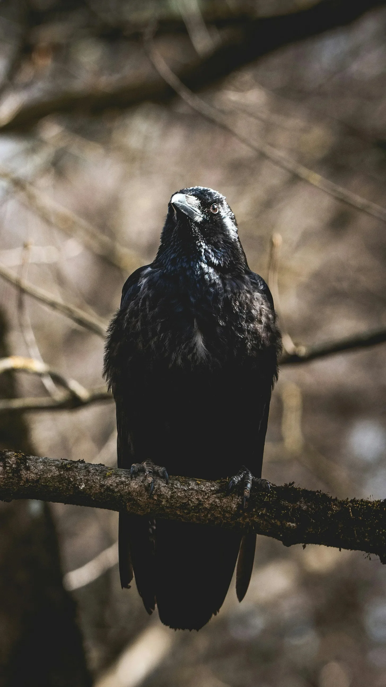

여자는 길을 잃었다.
The woman was lost.
해는 저물고 있었고, 어둠은 짙어지고 있었다.
The sun was setting, and darkness was falling.
그녀는 춥고, 배는 고팠다.
She was cold and hungry.
눈물이 흘러내렸다.
Tears streamed down her face.
그때, 까마귀 한 마리가 날아왔다.
Just then, a crow flew by.
까마귀는 여자를 바라보았다.
The crow looked at the woman.
여자는 까마귀를 보았다.
The woman looked at the crow.
까마귀는 여자에게 다가갔다.
The crow approached the woman.
까마귀는 여자의 손에 빵 조각을 떨어뜨렸다.
The crow dropped a piece of bread in the woman’s hand.
여자는 빵을 먹었다.
The woman ate the bread.
빵은 달콤했다.
The bread was sweet.
여자는 기쁨을 느꼈다.
The woman felt joy.
까마귀는 여자를 따라갔다.
The crow followed the woman.
까마귀는 길을 알고 있었다.
The crow knew the way.
까마귀는 여자를 집으로 인도했다.
The crow led the woman home.
여자는 집에 도착했다.
The woman arrived home.
여자는 안전했다.
The woman was safe.
여자는 행복했다.
The woman was happy.
까마귀는 날아갔다.
The crow flew away.
까마귀는 다시 숲으로 돌아갔다.
The crow returned to the forest.
여자는 까마귀에게 감사했다.
The woman was grateful to the crow.
따사로운 햇살이 카페 창문을 통해 쏟아져 들어와 엠마의 얼굴을 감쌌다.
Sunlight streamed through the cafe window, warming Emma’s face.
그녀는 마크의 문자를 다시 읽었다. 또다시.
She reread Mark’s text. Again.
“더 이상은 못 하겠어"라는 그의 말이 머릿속에 맴돌며 가슴을 아프게 했다.
His words, "can’t do this anymore,” echoed in her mind, her heart aching.
그들은 너무나 행복했고, 아늑한 저녁과 짧은 주말 여행 동안 웃음꽃을 피웠었다.
They’d been so happy, their laughter filling cozy evenings and stolen weekend getaways.
하지만 이제 둘 사이에는 침묵의 심연이 펼쳐져 있었고, 답 없는 전화와 점점 희미해져가는 희망이 담긴 문자만이 그 사이를 이어주고 있었다.
Now, a chasm of silence stretched between them, bridged only by unanswered calls and texts full of fading hope.
갑자기 선명하고 생생한 기억 하나가 떠올랐다.
A memory surfaced, sharp and vivid.
해변을 따라 거닐 때 마크의 따뜻하고 듬직한 손이 그녀의 손을 잡았다.
Mark’s hand, warm and reassuring, intertwined with hers as they strolled along the beach.
바다색과 같은 그의 눈은 사랑으로 반짝였고, 짭짤한 바람에 속삭이는 약속들로 가득했다.
His eyes, the color of the sea, sparkled with love and promises whispered in the salty breeze.
그것은 의심이 싹트기 전, 그의 불안감이 그들의 기반을 조금씩 무너뜨리며 모든 의견 차이를 전쟁터로 만들기 전이었다.
That was before the doubts crept in, before his insecurities chipped away at their foundation, turning every disagreement into a battleground.
눈물 한 방울이 엠마의 뺨을 타고 흘러내려 “끝났어"라는 글자 위로 떨어졌다.
A tear rolled down Emma’s cheek, falling onto the words "it’s over.”
그녀는 손끝으로 글자를 따라갔고, 메시지의 단호함이 온몸으로 스며들었다.
She traced the letters with her fingertip, the finality of the message sinking in.
한때 활기 넘쳤던 그들의 사랑 이야기는 이제 너덜너덜해진 조각이 되었고, 신뢰와 이해의 실타래는 돌이킬 수 없을 정도로 끊어져 버렸다.
Their love story, once a vibrant tapestry, was now a tattered fragment, the threads of trust and understanding severed beyond repair.
엠마는 심호흡을 하고 폰을 닫았다.
With a deep breath, Emma closed her phone.
과거의 무게가 조금은 가벼워지는 듯했다.
The weight of the past lifting slightly.
이제는 앞으로 나아가, 그녀의 마음을 소중히 간직했지만 무모하게 짓밟아버린 그 사람으로 인해 생긴 상처를 치유해야 할 때였다.
It was time to move on, to heal the wounds inflicted by the one who held her heart, yet shattered it with reckless abandon.
사랑이 연약한 꽃이 아니라 어떤 폭풍우도 견뎌낼 수 있는 강인한 꽃이 될 새로운 장이 그녀를 기다리고 있었다.
A new chapter awaited, one where love wouldn’t be a fragile flower, but a resilient bloom, capable of weathering any storm.